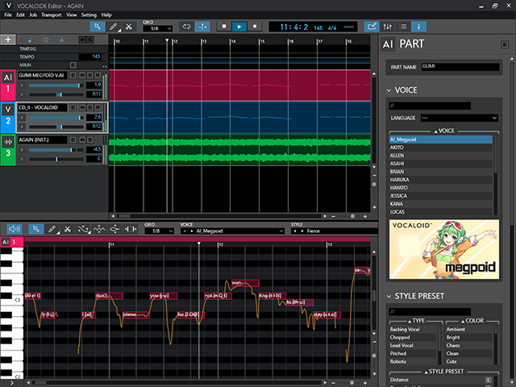

¿Qué es Vocaloid?

Vocaloid es un software de síntesis de voz desarrollado por Yamaha que permite crear melodías cantadas utilizando voces artificiales. Cada banco de voz proviene de una persona real grabada, y luego se manipula digitalmente para que pueda cantar cualquier melodía o letra.
Incluye:
-
 Motor de síntesis
Motor de síntesis
-
 Banco de voz grabado
Banco de voz grabado
-
 Edición digital por melodía
Edición digital por melodía